Learning curves are a useful way to represent how a team or individual improves efficiency and performance over time as they gain experience. These curves aid in comprehending and forecasting the time and resources required for future tasks. The primary insights from learning curves include:
Performance Improvement: As a team or individual performs a task repeatedly, they typically become more efficient, leading to a reduction in the time and cost required.
Forecasting: By analyzing past performance, project managers can predict future performance, set realistic deadlines, and allocate resources more effectively.
Benchmarking: Learning curves help in setting benchmarks and evaluating performance against industry standards or past projects.
Sigmoidal Functions for Modeling Learning Curves
Sigmoidal functions, such as the logistic function, are often used to model learning curves due to their characteristic S-shaped curve. This shape captures the three main phases of learning:
Initial Slow Improvement: At the beginning, the rate of improvement is slow as individuals or teams are just starting to learn and adapt.
Rapid Improvement: Once the basics are understood, the rate of improvement accelerates significantly as efficiency and proficiency increase.
Plateau: Eventually, the rate of improvement slows down again as the maximum potential or efficiency is approached.
The general form of a sigmoidal function (logistic function) is:
where:
L(t) is the learning outcome (e.g., efficiency, proficiency) at time t
Lmax is the maximum learning outcome (the plateau).
k is the growth rate, determining how quickly the learning improves.
to is the time at which the learning outcome is at its midpoint (the point of inflection).
Applications in Project Management
Task Estimation: Using learning curves to estimate the time required for future tasks based on the performance of similar past tasks.
Resource Allocation: Allocating resources efficiently by understanding the learning curve and optimizing the workforce deployment over time.
Training Programs: Designing training programs to maximize the rate of learning and minimize the time to reach optimal performance levels.
Performance Monitoring: Continuously monitoring performance and adjusting strategies to ensure that the learning curve progresses as expected.
Example
First, load the package:
Then, set up a data frame of time and completion percentage data:
data <- data.frame(time = 1:9, completion = c(5, 15, 40, 60, 70, 75, 80, 85, 90))Fit a logistic model to the data:
fit <- fit_sigmoidal(data, "time", "completion", "logistic")Use the model to predict future completion times:
predictions <- predict_sigmoidal(fit, seq(min(data$time), max(data$time) + 1,
length.out = 100), "logistic")Plot the results:
p <- ggplot2::ggplot(data, ggplot2::aes_string(x = "time", y = "completion")) +
ggplot2::geom_point() +
ggplot2::geom_line(data = predictions, ggplot2::aes(x = x, y = pred), color = "red") +
ggplot2::labs(title = "Fitted Logistic Model", x = "time", y = "completion %") +
ggplot2::theme_minimal()
p